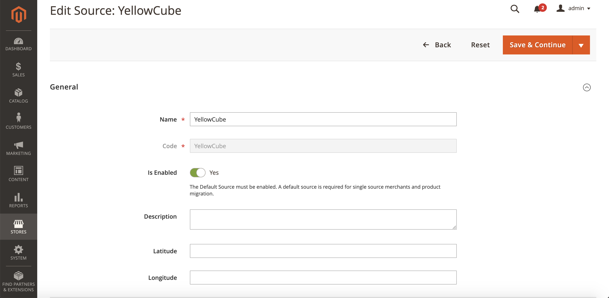
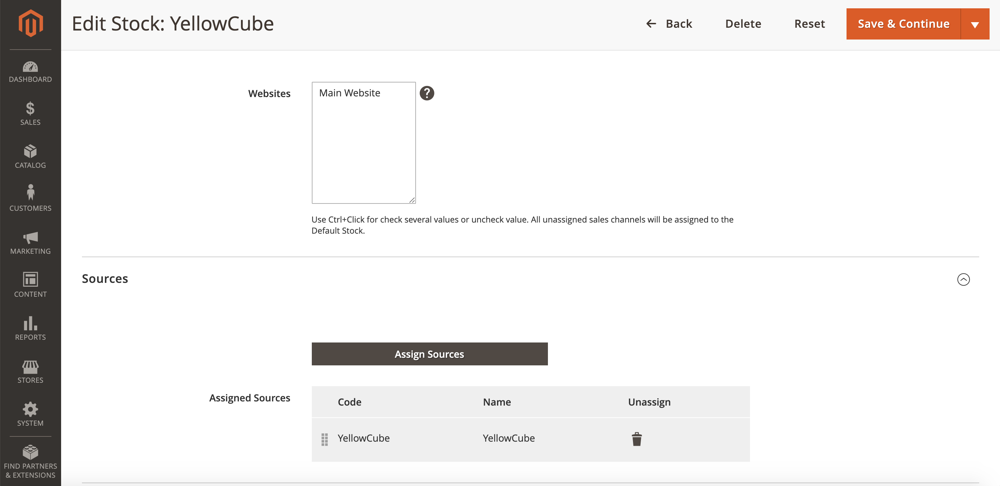
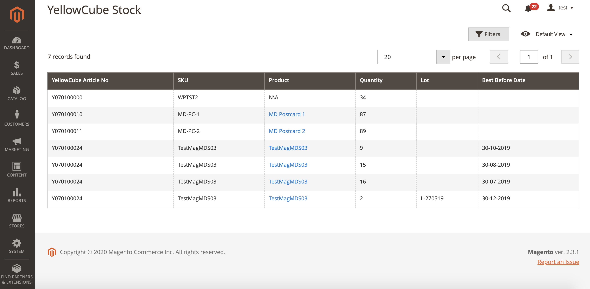

Stock management
Magento 2 allows you to manage inventory regardless of the warehouse location. There are two steps to have Stock management in place.
Sources
Sources describe the physical locations where products are managed. Go to Store > Inventory > Sources to open the Sources configuration page.
Upon enabling the extension, the Sources list should already contain YellowCube source.
The YellowCube source must be enabled.

Stocks
Stocks is a virtual inventory of your products available for sale through your sales channels.
Similarly to sources, the YellowCube Magento 2 extension creates and configures YellowCube stock entity. Keep in mind that YellowCube stock must have a valid YellowCube source assigned.

Reports
YellowCube Magento 2 Extension creates a stock report about available product quantities.
Access the page by navigating to Reports > Products > YellowCube Stock.

The table displays a list of YellowCube articles with the following columns:
- YellowCube Article No: The remote YellowCube identifier.
- SKU: The local SKU.
- Product: The referenced product in the Magento 2 shop.
- Quantity: The available quantity in the YellowCube stock.
- In case the lot management is enabled for a product the following columns have values:
- Lot: The YellowCube lot identifier.
- Best Before Date: The expiration date.
Use each of the table columns above as filter option.
The Stock inventory data synchronises with YellowCube on a daily basis. See Background updates for more details.